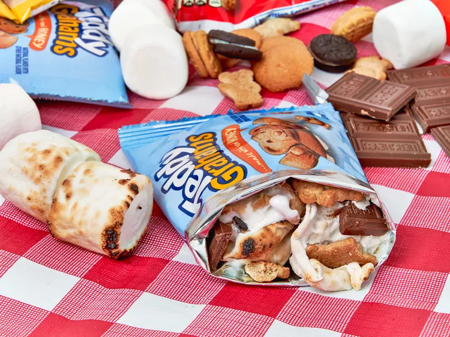

S'mores in a Bag recipe

This S'Mores in a Bag recipe is more of a concept than a recipe, but all the ingredients are easy to bring along on your
next cookout.
Ingredients
- 2 snack-sized bags of cookies, such as Nutter Butter®, Teddy Grahams®, Mini Oreos® or Nilla Wafers®
- 1 1/2 ounces chocolate candy bar, broken into pieces, such as Reese’s® Peanut Butter Cups or Hershey’s® chocolate bar
- 6 jumbo marshmallows
Steps
- Open snack bags and add chocolate candy pieces.
- Roast 3 marshmallows over a campfire or grill; add marshmallows to bag.
- Allow the warmth of the marshmallows to melt the chocolate, mix cookie-marshmallow mixture around slightly, and serve immediately.